Glimmer
A New Way to Locate and Rendezvous
Role
Product Conceptualization, UX/UI
Tools
Figma, Invision Freehand, Photoshop
Timeline
Winter 2019
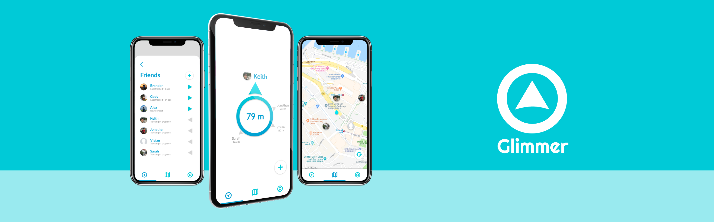
Overview
"How can I help people find and meet up with friends easier in public places?"
Problem
Every day, many people may find themselves in a situation where they lose track of or cannot find their friends in public places especially in dense or crowded areas such shopping malls, stations, or concerts. While existing apps provide location tracking and map features, none have provided an easy & intuitive solution to help people locate and meet up with one another. What results is valuable time wasted for a small yet frustrating problem.
Solution
Glimmer is a real time location tracking app that guides users towards their friends via its unique “compass” feature. Simply follow the arrow on the compass and the distance marker and you will be at your friend’s relative location in no time. With Glimmer, say goodbye to annoying location mix-ups, confusing maps, and the occasional poor sense of direction.
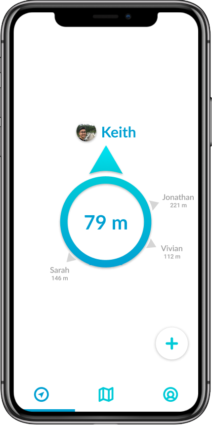
My Process
Research - Ideation - Design
Research
Common Pain Points
I began by identifying common pain points and issues people face that can lead up to these location mishaps. Surveying friends, drawing from travel articles, and reflecting from my experiences abroad, I was able to narrow down three general pain points.
1. Unfamiliar Territory
Perhaps someone is meeting up with a friend in a new city or traveling in a foreign country. Many may agree to meet up at a specific destination but once they are there, they may find the location to be much more unaccustomed than they expected it to be. New places can also frequently be subject to mix-ups or misinterpretations.
2. Environmental Obstacles
Even in the most open of spaces, crowds of people can make a location almost un-navigable and finding others very difficult. In a park, trees and terrain can obstruct the field of view making it hard to see others. Complex places like shopping malls, train stations, or airports can make navigating especially confusing.
3. Map Confusion
Digital maps are by far the best tools for navigation. However, many may still struggle to use maps as a reference to their surroundings. Studies have shown that some people struggle cognitively to translate their physical street-view perspective into the visual bird’s-eye view on a map. This confusion is further worsened especially in new and unfamiliar places. There also is a lack of accurate mapping data in many indoor or complex locations.
Typical Cases
The constructed conversations below provides an insight into typical cases of how our pain points can cause unnecessary confusion and inconvenience.
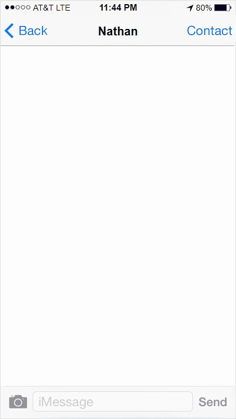
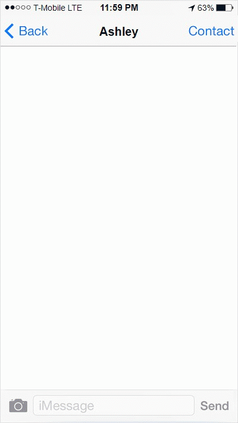
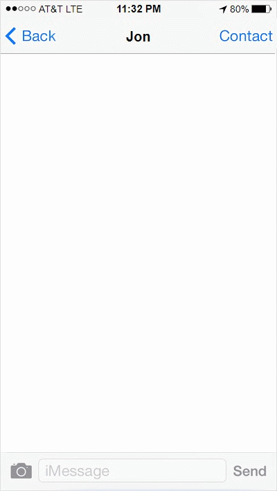
To address these common scenarios, I aimed to prototype a product that is:
Intuitive
Can assist others using the most simple of cognitive elements without added confusion or difficulty
Straightforward
Does not require prior knowledge such as locations, landmarks, & directions
Easy
User friendly, easily navigable, and can do its job quickly & effectively
Ideation
Compass
An arrow is probably the most simple and intuitive tool to guide someone from point A to point B, especially in places where traditional maps are of little use. Similar to a magnetic compass, the Glimmer compass would act as an arrow that always points towards the location of a friend and adjusts itself based on the direction you are facing and the orientation of your device. The distance counter would display the net distance between the user and their friend.
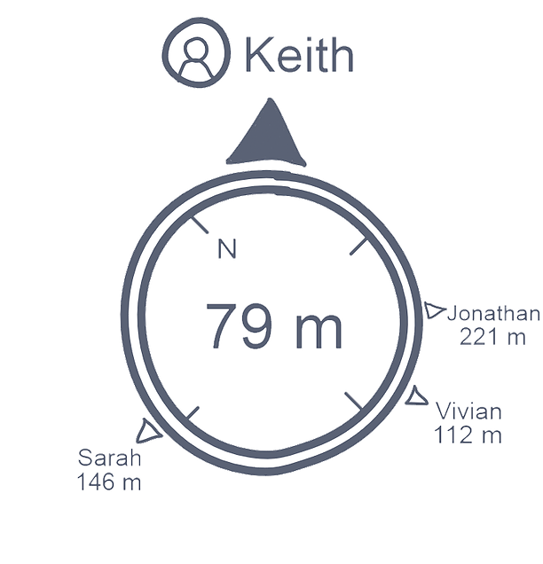
Map
In essence, Path creation would be the main feature of Pathworks. Users would input their origin and destination as well as optional filters and the app would compile a list of spots of interests close to their route. As a result, users can still make it to their intended destination but at the same time, conveniently explore and experience more along the way.
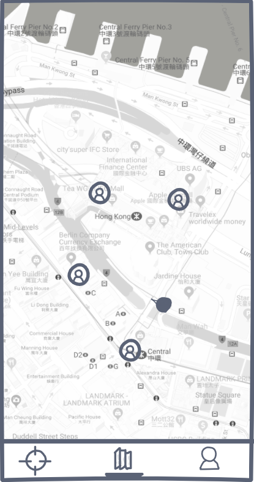
Social
Pathworks would do more than just generate paths. Users would have the ability to edit paths by adding or removing spots. They are able to do so by either browsing recommended spots nearby or searching for them. In other words, Pathworks is just as much as a travel database. Users then would be able to save specific spots and edited paths which can be retrieved later.
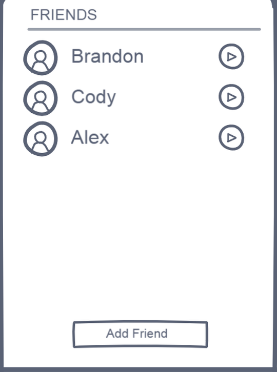
Wireframe and flow
I then drafted a user flow diagram with the wireframes I created. Assuming that users already have trouble in locating and rendezvousing with others, I hoped to create an experience that does not add to the frustration. In the end, the app should be simple enough so that users would not need more than two taps to do what they want.
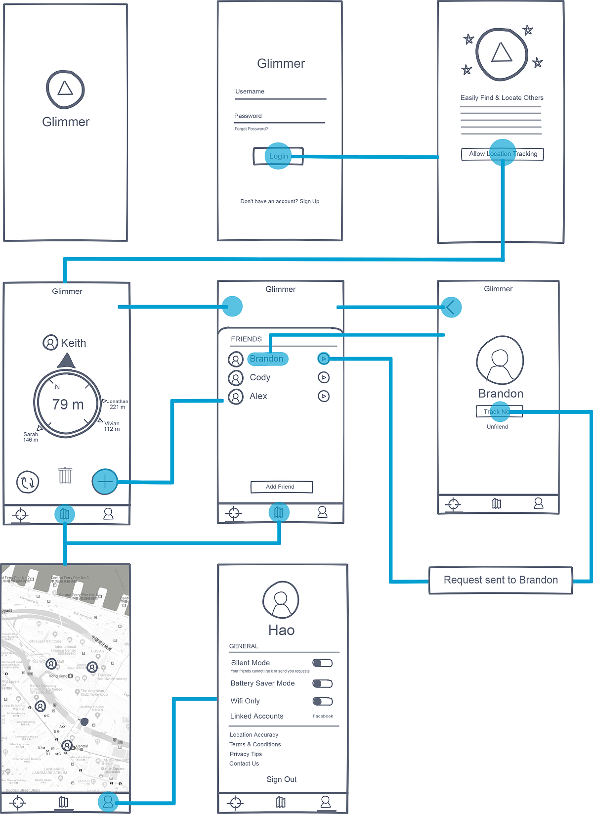
Design
Visual Design
I do not believe there is a better color palette to convey the essence of navigation and the spirit of travel than the colors of the ocean. I chose Glimmer to be highlighted with a blue-cyan color scheme which when contrasted with the white background will allow for an appealing yet minimalist user interface.
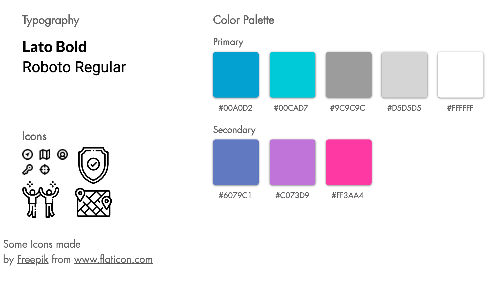
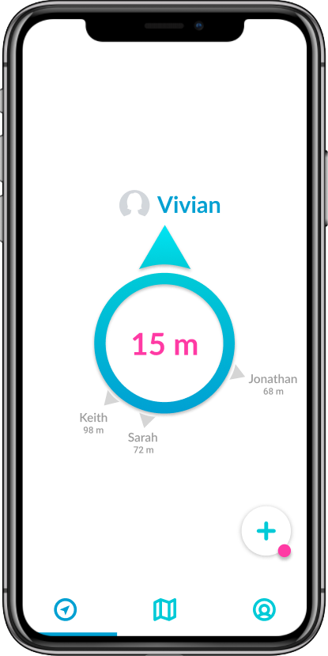
Rendezvous with others faster & easier
Say goodbye to navigational confusion of the past. Using GPS tracking, Glimmer's compass feature guides you towards your friends faster in almost every setting and location.
Get real-time locations of you & your friends
Glimmer's complementary map enhances its compass feature by displaying the real-time locations of you and your friends. Never feel like you are lost again.
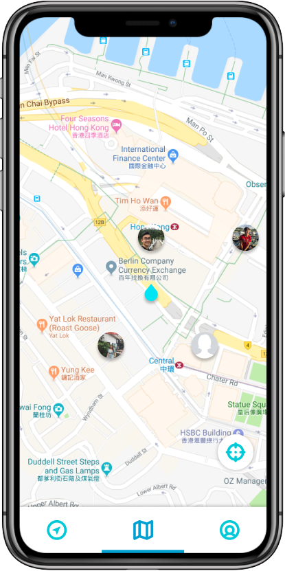
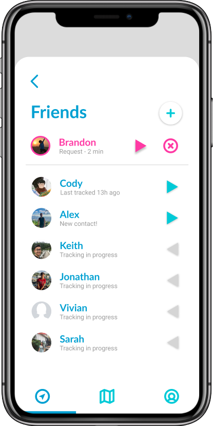
Convenient, easily accessible, & secure
Start connecting with others quickly in as little as two taps. Tracking on Glimmer is only allowed by two-way consent to ensure your privacy and security.
Takeaways
This was the first app design project I’ve done that went through the full design process. While, I did not follow any rigid guides, I was able to experiment and develop my own process and approach to product conceptualization and user centered design. I found this project challenging yet very enjoyable because I was able to combine my creative side with the analytical side required to design a well rounded product. This experience also convinced me that I want to continue solving problems involving navigation and travel in the future.
Next Steps
The next steps involve performing user testing. However, that would require the compass to be fully functioning which is impossible in current prototyping tools. For that reason, I want to move forward with actual development of Glimmer and to further validate its potential to be a viable product.